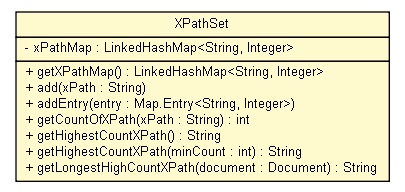

tud.iir.extraction
Class XPathSet

java.lang.Object
 tud.iir.extraction.XPathSet
tud.iir.extraction.XPathSet
public class XPathSet
- extends java.lang.Object
A set of xPaths.
|
Field Summary |
private java.util.LinkedHashMap<java.lang.String,java.lang.Integer> |
xPathMap
|
|
Method Summary |
void |
add(java.lang.String xPath)
|
void |
addEntry(java.util.Map.Entry<java.lang.String,java.lang.Integer> entry)
|
int |
getCountOfXPath(java.lang.String xPath)
|
java.lang.String |
getHighestCountXPath()
|
java.lang.String |
getHighestCountXPath(int minCount)
|
java.lang.String |
getLongestHighCountXPath(org.w3c.dom.Document document)
Return the longest (or highest priority) path that contains the highest count path as a substring. |
java.util.LinkedHashMap<java.lang.String,java.lang.Integer> |
getXPathMap()
|
| Methods inherited from class java.lang.Object |
clone, equals, finalize, getClass, hashCode, notify, notifyAll, toString, wait, wait, wait |
xPathMap
private java.util.LinkedHashMap<java.lang.String,java.lang.Integer> xPathMap
XPathSet
public XPathSet()
getXPathMap
public java.util.LinkedHashMap<java.lang.String,java.lang.Integer> getXPathMap()
add
public void add(java.lang.String xPath)
addEntry
public void addEntry(java.util.Map.Entry<java.lang.String,java.lang.Integer> entry)
getCountOfXPath
public int getCountOfXPath(java.lang.String xPath)
getHighestCountXPath
public java.lang.String getHighestCountXPath()
getHighestCountXPath
public java.lang.String getHighestCountXPath(int minCount)
getLongestHighCountXPath
public java.lang.String getLongestHighCountXPath(org.w3c.dom.Document document)
- Return the longest (or highest priority) path that contains the highest count path as a substring.
TODO b/a = a/b (website1.html)
- Returns:
- The longest xPath with the highest count.